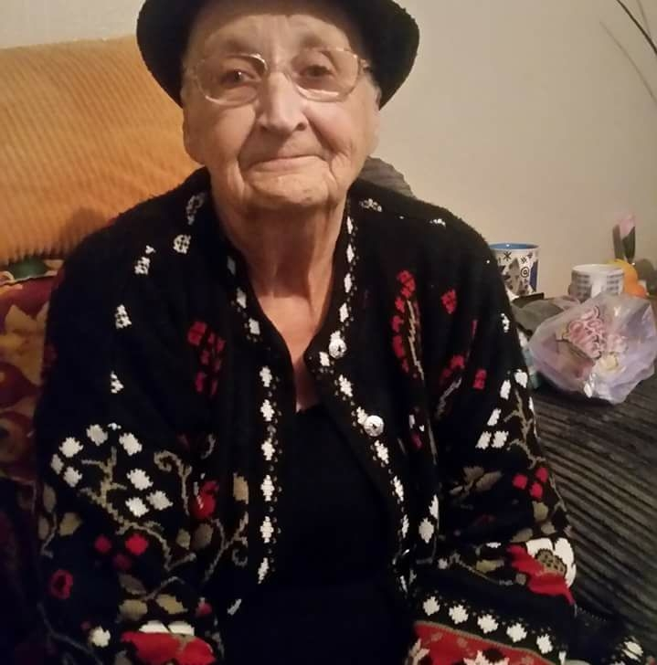
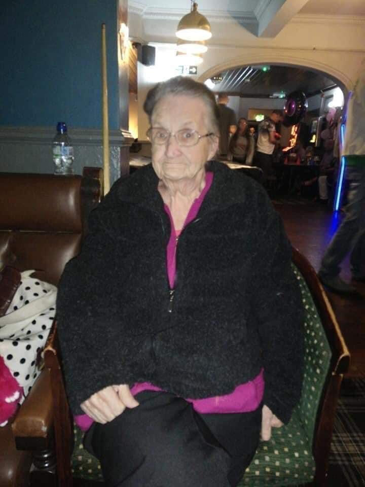

In loving memory of

Barbara Maureen Tinmurth nee Cross
- Born in 1937 in Grimsby, Barbara spent her early life in Kent
- Barbara moved back to Grimsby as a teenager, she had her first job at The Manor also known as The house with many chimneys
- In the late 1950's Barbara met her husband to be Ronald Tinmurth on a blind date
- 2nd April 1960 Barbara married Ronald
- 1961 The couple had their first son Michael
- They went onto have Shaun, Dawn, Jackie, Michelle, Jason and Patrick respectivley
- This made Barbara a full time mum
- Barbara was heavily into country and western music, and up until the death of her husband taught line dancing
- Barbara went onto be a nanna, and a great nanna.
- Barbara loved her family dearly and was known as Mam to more than just her siblings
- Barbara was very much loved
- Barbara took ill in December 2019 and was taken into hospital
- Barbara sadly passed away in hospital in January 2020 surrounded by her family
